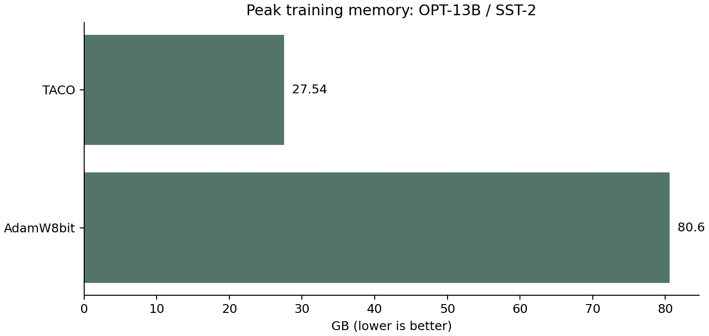

预印本 · 未同行评审arXiv 阅读：关键章节
TACO：用列稀疏更新降低全参数微调内存
研究问题
全参数微调的优化器状态和峰值内存限制可训练模型规模。
核心贡献
按列选择稀疏更新方向，并保存低精度稀疏梯度历史。
结果与条件
固定对照中，TACO 峰值内存为27.54 GB，AdamW8bit为80.60 GB；准确率分别为94.22%和95.25%。
OPT-13B、SST-2、H100；采用论文共享配置，不能把状态内存和峰值内存混为一谈。

在同一模型和任务中比较峰值内存。TACO更省内存，但表中精度略低；图只表示内存维度，不能替代精度、吞吐与稳定性对照。
条件：OPT-13B / SST-2 / H100，论文附录B共享设置。重绘未复现实验。
出处 · 2610.02199v1为什么读对单卡全参数微调的状态瓶颈有明确机制，适合优先检查优化器替换条件。
主要限制 内存收益伴随任务精度差异；不同优化器实现与学习率不同，也不能据此断言吞吐全面领先。
阅读建议先读实验配置，再核对其他任务与吞吐，最后评估是否值得替换自己的优化器。
结论证据与阅读记录
- 固定对照中，TACO 峰值内存为27.54 GB，AdamW8bit为80.60 GB；准确率分别为94.22%和95.25%。 · §6、附录B表1/2/4
TACO 27.54 GB 94.22%; AdamW8bit 80.60 GB 95.25%.
- 固定对照中，TACO 峰值内存为27.54 GB，AdamW8bit为80.60 GB；准确率分别为94.22%和95.25%。
- 指标：峰值训练内存与验证准确率；比较：TACO / AdamW8bit，同模型同任务；条件：OPT-13B、SST-2、H100；采用论文共享配置，不能把状态内存和峰值内存混为一谈。
对照 Table 4 的 TACO 与 AdamW8bit 两行，峰值内存和准确率分别取同列；不同实现的吞吐不混作算法收益。
- 工作负载
- OPT-13B 在 SST-2 上全参数微调，按验证集选择检查点。
- 硬件与配置
- 同型号 H100；峰值为训练 CUDA allocated memory，单位为十进制 GB。
- 比较公平性
- 同模型和任务；各优化器经过学习率搜索，实现与融合内核仍有差异。
- 成本与代价
- 需反向传播；峰值内存收益不能替代精度和吞吐比较。
§3列稀疏更新与§5动态低精度梯度历史；§6及附录B表1、2、3、4：设置、精度、内存与吞吐；依据表3/4的任务差异及实现条件判断适用边界；论文无单独局限章节
发现渠道：arXiv